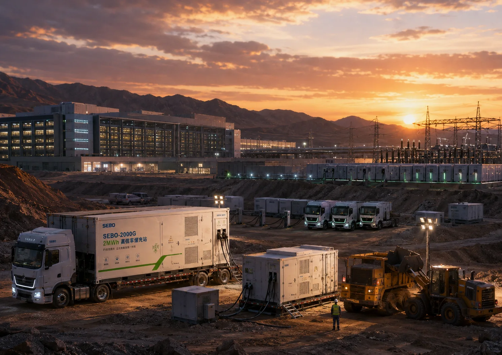

OPERATING SCENARIO
OPERATING SCENARIO
重载车队 · 百车调度、站端功率、储充协同与服务 SLA 一体设计。

REFERENCE APPLICATION · 重载车队
百车调度、站端功率、储充协同与服务 SLA 一体设计。
CONCEPT ILLUSTRATION · not a production-delivery claimThe solution must be engineered against real operating conditions, approved products, responsibility boundaries, testing and M&V.
OPERATING SCENARIO
重载车队 · 百车调度、站端功率、储充协同与服务 SLA 一体设计。
CONSTRAINTS
地点、负荷/车辆、时间窗口、温度、空间、通信、并网与维护条件需要现场确认。
REFERENCE ARCHITECTURE
按工况组合雷鸟、PowerCore-SST/HVDC、移动能源、智鉴与来电啦服务。
PRODUCT SELECTION
容量、功率、电压、接口、底盘、冷却与部署方式进入结构化选型。
OPERATING MODEL
调度、工单、服务、资产和责任按客户班次与现场组织。
REFERENCE METRICS
指标必须绑定基线、采样周期、测量方法、异常处理与证据状态。
APPLICATION BOUNDARIES
本页不构成产品承诺或项目报价，最终以技术协议、FAT/SAT 与 M&V 为准。
NEXT STEP
Submit a project, technical, partnership, visit or career enquiry to the accountable route.
Go to contact